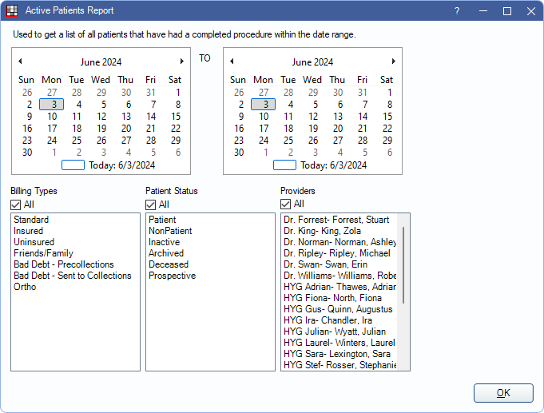
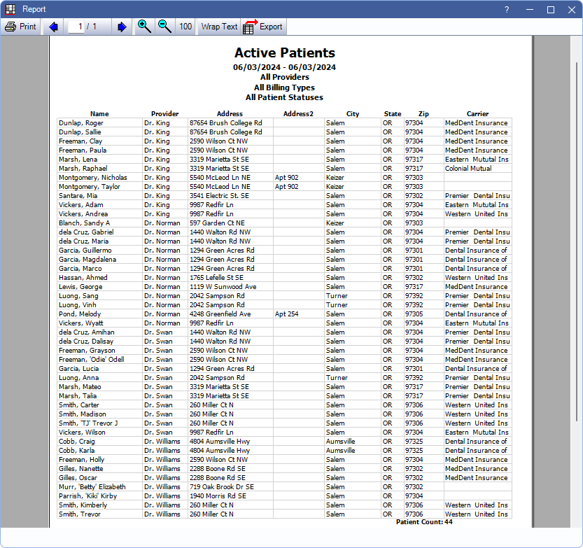

Active Patients Report
The Active Patient report lists all active patients that have had a completed procedure within a specific date range.
In Standard Reports, in the Lists section, click Active Patients.
- To control user access to this report, see Report Setup: Security Permissions.
- To get a list of inactive patients try the following Query Examples:
- Query example 285: Lists patients with status of Inactive or Archived and includes date last seen.
- Query example 49: Lists patients not seen since a specified date. Includes contact information.
Filters
Set the report criteria and filters before running the report.
Calendar: Choose a date range. The left calendar shows the start date; the right calendar shows the end date. Calendar automatically defaults to Today's date.
Billing Types: Check All to include all Billing Types or uncheck the box to select specific types.
Patient Status: Check All to include all patient status types or uncheck the box to select specific types.
Providers: Check All to include all providers or uncheck the box to select specific providers. Filters by patient's primary or secondary provider.
- To exclude hidden providers from the report, manually select visible providers from the list.
Clinics: Only available when Clinics are enabled in Show Features. Select clinics to include in the report. Check All (includes hidden) to include all clinics, including those marked hidden.
- Filters by patient's assigned clinic.
- If user is restricted to specific clinics, only accessible clinics are listed. When checking All (includes hidden), results only include clinics the user has access to, including those marked hidden; results do not include clinics the user is restricted from or patients not assigned to a clinic.
Report Preview
Click OK to generate a print preview the report. The following is an example of the report and explanation of the report columns. For a description of toolbar buttons, see Complex Report System.
If using clinics, patients are grouped into their assigned clinic. The list is then grouped by provider and alphabetized by then by patient name.
- Name: Patient's last name, preferred name, and first name.
- Provider: Patient's primary provider assigned in Edit Patient Information.
- Address, Address 2, City, State, and Zip: Patient's address information from Edit Patient Information.
- Carrier: Patient's primary insurance carrier.
Total patient count is included on the last page of the report in bold.